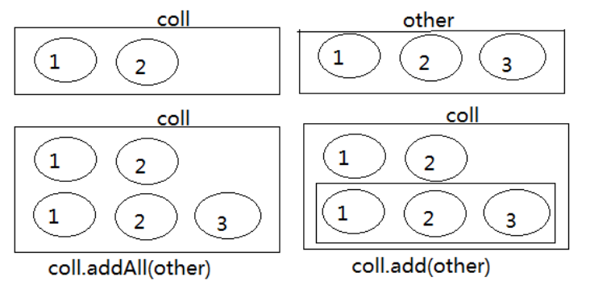

第12章_集合框架
本章专题与脉络

1. 集合框架概述
1.1 生活中的容器
1.2 数组的特点与弊端
- 一方面，面向对象语言对事物的体现都是以对象的形式，为了方便对多个对象的操作，就要对对象进行存储。
- 另一方面，使用数组存储对象方面具有
一些弊端，而Java 集合就像一种容器，可以动态地把多个对象的引用放入容器中。 - 数组在内存存储方面的
特点：- 数组初始化以后，长度就确定了。
- 数组中的添加的元素是依次紧密排列的，有序的，可以重复的。
- 数组声明的类型，就决定了进行元素初始化时的类型。不是此类型的变量，就不能添加。
- 可以存储基本数据类型值，也可以存储引用数据类型的变量
- 数组在存储数据方面的
弊端：- 数组初始化以后，长度就不可变了，不便于扩展
- 数组中提供的属性和方法少，不便于进行添加、删除、插入、获取元素个数等操作，且效率不高。
- 数组存储数据的特点单一，只能存储有序的、可以重复的数据
- Java 集合框架中的类可以用于存储多个
对象，还可用于保存具有映射关系的关联数组。
1.3 Java集合框架体系
Java 集合可分为 Collection 和 Map 两大体系：
Collection接口：用于存储一个一个的数据，也称
单列数据集合。- List子接口：用来存储有序的、可以重复的数据（主要用来替换数组，”动态”数组）
- 实现类：ArrayList(主要实现类)、LinkedList、Vector
- Set子接口：用来存储无序的、不可重复的数据（类似于高中讲的”集合”）
- 实现类：HashSet(主要实现类)、LinkedHashSet、TreeSet
- List子接口：用来存储有序的、可以重复的数据（主要用来替换数组，”动态”数组）
Map接口：用于存储具有映射关系“key-value对”的集合，即一对一对的数据，也称
双列数据集合。(类似于高中的函数、映射。(x1,y1),(x2,y2) —> y = f(x) )- HashMap(主要实现类)、LinkedHashMap、TreeMap、Hashtable、Properties
JDK提供的集合API位于java.util包内
图示：集合框架全图

- 简图1：Collection接口继承树

- 简图2：Map接口继承树
1.4 集合的使用场景

2. Collection接口及方法
- JDK不提供此接口的任何直接实现，而是提供更具体的子接口（如：Set和List）去实现。
- Collection 接口是 List和Set接口的父接口，该接口里定义的方法既可用于操作 Set 集合，也可用于操作 List 集合。方法如下：
2.1 添加
（1）add(E obj)：添加元素对象到当前集合中
（2）addAll(Collection other)：添加other集合中的所有元素对象到当前集合中，即this = this ∪ other
注意：add和addAll的区别
package com.atguigu.collection;
import org.junit.Test;
import java.util.ArrayList;
import java.util.Collection;
public class TestCollectionAdd {
@Test
public void testAdd(){
//ArrayList是Collection的子接口List的实现类之一。
Collection coll = new ArrayList();
coll.add("小李广");
coll.add("扫地僧");
coll.add("石破天");
System.out.println(coll);
}
@Test
public void testAddAll(){
Collection c1 = new ArrayList();
c1.add(1);
c1.add(2);
System.out.println("c1集合元素的个数：" + c1.size());//2
System.out.println("c1 = " + c1);
Collection c2 = new ArrayList();
c2.add(1);
c2.add(2);
System.out.println("c2集合元素的个数：" + c2.size());//2
System.out.println("c2 = " + c2);
Collection other = new ArrayList();
other.add(1);
other.add(2);
other.add(3);
System.out.println("other集合元素的个数：" + other.size());//3
System.out.println("other = " + other);
System.out.println();
c1.addAll(other);
System.out.println("c1集合元素的个数：" + c1.size());//5
System.out.println("c1.addAll(other) = " + c1);
c2.add(other);
System.out.println("c2集合元素的个数：" + c2.size());//3
System.out.println("c2.add(other) = " + c2);
}
}注意：coll.addAll(other);与coll.add(other);

2.2 判断
（3）int size()：获取当前集合中实际存储的元素个数
（4）boolean isEmpty()：判断当前集合是否为空集合
（5）boolean contains(Object obj)：判断当前集合中是否存在一个与obj对象equals返回true的元素
（6）boolean containsAll(Collection coll)：判断coll集合中的元素是否在当前集合中都存在。即coll集合是否是当前集合的“子集”
（7）boolean equals(Object obj)：判断当前集合与obj是否相等
package com.atguigu.collection;
import org.junit.Test;
import java.util.ArrayList;
import java.util.Arrays;
import java.util.Collection;
public class TestCollectionContains {
@Test
public void test01() {
Collection coll = new ArrayList();
System.out.println("coll在添加元素之前，isEmpty = " + coll.isEmpty());
coll.add("小李广");
coll.add("扫地僧");
coll.add("石破天");
coll.add("佛地魔");
System.out.println("coll的元素个数" + coll.size());
System.out.println("coll在添加元素之后，isEmpty = " + coll.isEmpty());
}
@Test
public void test02() {
Collection coll = new ArrayList();
coll.add("小李广");
coll.add("扫地僧");
coll.add("石破天");
coll.add("佛地魔");
System.out.println("coll = " + coll);
System.out.println("coll是否包含“小李广” = " + coll.contains("小李广"));
System.out.println("coll是否包含“宋红康” = " + coll.contains("宋红康"));
Collection other = new ArrayList();
other.add("小李广");
other.add("扫地僧");
other.add("尚硅谷");
System.out.println("other = " + other);
System.out.println("coll.containsAll(other) = " + coll.containsAll(other));
}
@Test
public void test03(){
Collection c1 = new ArrayList();
c1.add(1);
c1.add(2);
System.out.println("c1集合元素的个数：" + c1.size());//2
System.out.println("c1 = " + c1);
Collection c2 = new ArrayList();
c2.add(1);
c2.add(2);
System.out.println("c2集合元素的个数：" + c2.size());//2
System.out.println("c2 = " + c2);
Collection other = new ArrayList();
other.add(1);
other.add(2);
other.add(3);
System.out.println("other集合元素的个数：" + other.size());//3
System.out.println("other = " + other);
System.out.println();
c1.addAll(other);
System.out.println("c1集合元素的个数：" + c1.size());//5
System.out.println("c1.addAll(other) = " + c1);
System.out.println("c1.contains(other) = " + c1.contains(other));
System.out.println("c1.containsAll(other) = " + c1.containsAll(other));
System.out.println();
c2.add(other);
System.out.println("c2集合元素的个数：" + c2.size());
System.out.println("c2.add(other) = " + c2);
System.out.println("c2.contains(other) = " + c2.contains(other));
System.out.println("c2.containsAll(other) = " + c2.containsAll(other));
}
}2.3 删除
（8）void clear()：清空集合元素
（9） boolean remove(Object obj) ：从当前集合中删除第一个找到的与obj对象equals返回true的元素。
（10）boolean removeAll(Collection coll)：从当前集合中删除所有与coll集合中相同的元素。即this = this - this ∩ coll
（11）boolean retainAll(Collection coll)：从当前集合中删除两个集合中不同的元素，使得当前集合仅保留与coll集合中的元素相同的元素，即当前集合中仅保留两个集合的交集，即this = this ∩ coll；
注意几种删除方法的区别
package com.atguigu.collection;
import org.junit.Test;
import java.util.ArrayList;
import java.util.Collection;
import java.util.function.Predicate;
public class TestCollectionRemove {
@Test
public void test01(){
Collection coll = new ArrayList();
coll.add("小李广");
coll.add("扫地僧");
coll.add("石破天");
coll.add("佛地魔");
System.out.println("coll = " + coll);
coll.remove("小李广");
System.out.println("删除元素\"小李广\"之后coll = " + coll);
coll.clear();
System.out.println("coll清空之后，coll = " + coll);
}
@Test
public void test02() {
Collection coll = new ArrayList();
coll.add("小李广");
coll.add("扫地僧");
coll.add("石破天");
coll.add("佛地魔");
System.out.println("coll = " + coll);
Collection other = new ArrayList();
other.add("小李广");
other.add("扫地僧");
other.add("尚硅谷");
System.out.println("other = " + other);
coll.removeAll(other);
System.out.println("coll.removeAll(other)之后，coll = " + coll);
System.out.println("coll.removeAll(other)之后，other = " + other);
}
@Test
public void test03() {
Collection coll = new ArrayList();
coll.add("小李广");
coll.add("扫地僧");
coll.add("石破天");
coll.add("佛地魔");
System.out.println("coll = " + coll);
Collection other = new ArrayList();
other.add("小李广");
other.add("扫地僧");
other.add("尚硅谷");
System.out.println("other = " + other);
coll.retainAll(other);
System.out.println("coll.retainAll(other)之后，coll = " + coll);
System.out.println("coll.retainAll(other)之后，other = " + other);
}
}2.4 其它
（12）Object[] toArray()：返回包含当前集合中所有元素的数组
（13）hashCode()：获取集合对象的哈希值
（14）iterator()：返回迭代器对象，用于集合遍历
public class TestCollectionContains {
@Test
public void test01() {
Collection coll = new ArrayList();
coll.add("小李广");
coll.add("扫地僧");
coll.add("石破天");
coll.add("佛地魔");
//集合转换为数组：集合的toArray()方法
Object[] objects = coll.toArray();
System.out.println("用数组返回coll中所有元素：" + Arrays.toString(objects));
//对应的，数组转换为集合：调用Arrays的asList(Object ...objs)
Object[] arr1 = new Object[]{123,"AA","CC"};
Collection list = Arrays.asList(arr1);
System.out.println(list);
}
}3. Iterator(迭代器)接口
3.1 Iterator接口
在程序开发中，经常需要遍历集合中的所有元素。针对这种需求，JDK专门提供了一个接口
java.util.Iterator。Iterator接口也是Java集合中的一员，但它与Collection、Map接口有所不同。- Collection接口与Map接口主要用于
存储元素 Iterator，被称为迭代器接口，本身并不提供存储对象的能力，主要用于遍历Collection中的元素
- Collection接口与Map接口主要用于
Collection接口继承了java.lang.Iterable接口，该接口有一个iterator()方法，那么所有实现了Collection接口的集合类都有一个iterator()方法，用以返回一个实现了Iterator接口的对象。
public Iterator iterator(): 获取集合对应的迭代器，用来遍历集合中的元素的。- 集合对象每次调用iterator()方法都得到一个全新的迭代器对象，默认游标都在集合的第一个元素之前。
Iterator接口的常用方法如下：
public E next():返回迭代的下一个元素。public boolean hasNext():如果仍有元素可以迭代，则返回 true。
注意：在调用it.next()方法之前必须要调用it.hasNext()进行检测。若不调用，且下一条记录无效，直接调用it.next()会抛出
NoSuchElementException异常。
举例：
package com.atguigu.iterator;
import org.junit.Test;
import java.util.ArrayList;
import java.util.Collection;
import java.util.Iterator;
public class TestIterator {
@Test
public void test01(){
Collection coll = new ArrayList();
coll.add("小李广");
coll.add("扫地僧");
coll.add("石破天");
Iterator iterator = coll.iterator();
System.out.println(iterator.next());
System.out.println(iterator.next());
System.out.println(iterator.next());
System.out.println(iterator.next()); //报NoSuchElementException异常
}
@Test
public void test02(){
Collection coll = new ArrayList();
coll.add("小李广");
coll.add("扫地僧");
coll.add("石破天");
Iterator iterator = coll.iterator();//获取迭代器对象
while(iterator.hasNext()) {//判断是否还有元素可迭代
System.out.println(iterator.next());//取出下一个元素
}
}
}
3.2 迭代器的执行原理
Iterator迭代器对象在遍历集合时，内部采用指针的方式来跟踪集合中的元素，接下来通过一个图例来演示Iterator对象迭代元素的过程：

使用Iterator迭代器删除元素：java.util.Iterator迭代器中有一个方法：void remove() ;
Iterator iter = coll.iterator();//回到起点
while(iter.hasNext()){
Object obj = iter.next();
if(obj.equals("Tom")){
iter.remove();
}
}注意：
Iterator可以删除集合的元素，但是遍历过程中通过迭代器对象的remove方法，不是集合对象的remove方法。
如果还未调用next()或在上一次调用 next() 方法之后已经调用了 remove() 方法，再调用remove()都会报IllegalStateException。
Collection已经有remove(xx)方法了，为什么Iterator迭代器还要提供删除方法呢？因为迭代器的remove()可以按指定的条件进行删除。
例如：要删除以下集合元素中的偶数
package com.atguigu.iterator;
import org.junit.Test;
import java.util.ArrayList;
import java.util.Collection;
import java.util.Iterator;
public class TestIteratorRemove {
@Test
public void test01(){
Collection coll = new ArrayList();
coll.add(1);
coll.add(2);
coll.add(3);
coll.add(4);
coll.add(5);
coll.add(6);
Iterator iterator = coll.iterator();
while(iterator.hasNext()){
Integer element = (Integer) iterator.next();
if(element % 2 == 0){
iterator.remove();
}
}
System.out.println(coll);
}
}
在JDK8.0时，Collection接口有了removeIf 方法，即可以根据条件删除。（第18章中再讲）
package com.atguigu.collection;
import org.junit.Test;
import java.util.ArrayList;
import java.util.Collection;
import java.util.function.Predicate;
public class TestCollectionRemoveIf {
@Test
public void test01(){
Collection coll = new ArrayList();
coll.add("小李广");
coll.add("扫地僧");
coll.add("石破天");
coll.add("佛地魔");
System.out.println("coll = " + coll);
coll.removeIf(new Predicate() {
@Override
public boolean test(Object o) {
String str = (String) o;
return str.contains("地");
}
});
System.out.println("删除包含\"地\"字的元素之后coll = " + coll);
}
}3.3 foreach循环
foreach循环（也称增强for循环）是 JDK5.0 中定义的一个高级for循环，专门用来
遍历数组和集合的。foreach循环的语法格式：
for(元素的数据类型 局部变量 : Collection集合或数组){
//操作局部变量的输出操作
}
//这里局部变量就是一个临时变量，自己命名就可以- 举例：
package com.atguigu.iterator;
import org.junit.Test;
import java.util.ArrayList;
import java.util.Collection;
public class TestForeach {
@Test
public void test01(){
Collection coll = new ArrayList();
coll.add("小李广");
coll.add("扫地僧");
coll.add("石破天");
//foreach循环其实就是使用Iterator迭代器来完成元素的遍历的。
for (Object o : coll) {
System.out.println(o);
}
}
@Test
public void test02(){
int[] nums = {1,2,3,4,5};
for (int num : nums) {
System.out.println(num);
}
System.out.println("-----------------");
String[] names = {"张三","李四","王五"};
for (String name : names) {
System.out.println(name);
}
}
}- 对于集合的遍历，增强for的内部原理其实是个Iterator迭代器。如下图。

- 它用于遍历Collection和数组。通常只进行遍历元素，不要在遍历的过程中对集合元素进行增删操作。
- 练习：判断输出结果为何？
public class ForTest {
public static void main(String[] args) {
String[] str = new String[5];
for (String myStr : str) {
myStr = "atguigu";
System.out.println(myStr);
}
for (int i = 0; i < str.length; i++) {
System.out.println(str[i]);
}
}
}
4. Collection子接口1：List
4.1 List接口特点
鉴于Java中数组用来存储数据的局限性，我们通常使用
java.util.List替代数组List集合类中
元素有序、且可重复，集合中的每个元素都有其对应的顺序索引。- 举例：List集合存储数据，就像银行门口客服，给每一个来办理业务的客户分配序号：第一个来的是“张三”，客服给他分配的是0；第二个来的是“李四”，客服给他分配的1；以此类推，最后一个序号应该是“总人数-1”。

- JDK API中List接口的实现类常用的有：
ArrayList、LinkedList和Vector。
4.2 List接口方法
List除了从Collection集合继承的方法外，List 集合里添加了一些根据索引来操作集合元素的方法。
- 插入元素
void add(int index, Object ele):在index位置插入ele元素- boolean addAll(int index, Collection eles):从index位置开始将eles中的所有元素添加进来
- 获取元素
Object get(int index):获取指定index位置的元素- List subList(int fromIndex, int toIndex):返回从fromIndex到toIndex位置的子集合
- 获取元素索引
- int indexOf(Object obj):返回obj在集合中首次出现的位置
- int lastIndexOf(Object obj):返回obj在当前集合中末次出现的位置
- 删除和替换元素
Object remove(int index):移除指定index位置的元素，并返回此元素Object set(int index, Object ele):设置指定index位置的元素为ele
举例：
package com.atguigu.list;
import java.util.ArrayList;
import java.util.List;
public class TestListMethod {
public static void main(String[] args) {
// 创建List集合对象
List<String> list = new ArrayList<String>();
// 往 尾部添加 指定元素
list.add("图图");
list.add("小美");
list.add("不高兴");
System.out.println(list);
// add(int index,String s) 往指定位置添加
list.add(1,"没头脑");
System.out.println(list);
// String remove(int index) 删除指定位置元素 返回被删除元素
// 删除索引位置为2的元素
System.out.println("删除索引位置为2的元素");
System.out.println(list.remove(2));
System.out.println(list);
// String set(int index,String s)
// 在指定位置 进行 元素替代（改）
// 修改指定位置元素
list.set(0, "三毛");
System.out.println(list);
// String get(int index) 获取指定位置元素
// 跟size() 方法一起用 来 遍历的
for(int i = 0;i<list.size();i++){
System.out.println(list.get(i));
}
//还可以使用增强for
for (String string : list) {
System.out.println(string);
}
}
}注意：在JavaSE中List名称的类型有两个，一个是java.util.List集合接口，一个是java.awt.List图形界面的组件，别导错包了。
4.3 List接口主要实现类：ArrayList
ArrayList 是 List 接口的
主要实现类本质上，ArrayList是对象引用的一个”变长”数组
Arrays.asList(…) 方法返回的 List 集合，既不是 ArrayList 实例，也不是 Vector 实例。 Arrays.asList(…) 返回值是一个固定长度的 List 集合

4.4 List的实现类之二：LinkedList
- 对于频繁的插入或删除元素的操作，建议使用LinkedList类，效率较高。这是由底层采用链表（双向链表）结构存储数据决定的。
- 特有方法：
- void addFirst(Object obj)
- void addLast(Object obj)
- Object getFirst()
- Object getLast()
- Object removeFirst()
- Object removeLast()
4.5 List的实现类之三：Vector
- Vector 是一个
古老的集合，JDK1.0就有了。大多数操作与ArrayList相同，区别之处在于Vector是线程安全的。 - 在各种List中，最好把
ArrayList作为默认选择。当插入、删除频繁时，使用LinkedList；Vector总是比ArrayList慢，所以尽量避免使用。 - 特有方法：
- void addElement(Object obj)
- void insertElementAt(Object obj,int index)
- void setElementAt(Object obj,int index)
- void removeElement(Object obj)
- void removeAllElements()
4.6 练习
面试题：
@Test
public void testListRemove() {
List list = new ArrayList();
list.add(1);
list.add(2);
list.add(3);
updateList(list);
System.out.println(list);//[1,2]
}
private static void updateList(List list) {
list.remove(2);
}
练习1：
- 定义学生类，属性为姓名、年龄，提供必要的getter、setter方法，构造器，toString()，equals()方法。
- 使用ArrayList集合，保存录入的多个学生对象。
- 循环录入的方式，1：继续录入，0：结束录入。
- 录入结束后，用foreach遍历集合。
代码实现，效果如图所示：

package com.atguigu.test01;
import java.util.ArrayList;
import java.util.Scanner;
public class StudentTest {
public static void main(String[] args) {
Scanner scanner = new Scanner(System.in);
ArrayList stuList = new ArrayList();
for (;;) {
System.out.println("选择（录入 1 ；结束 0）");
int x = scanner.nextInt();//根据x的值，判断是否需要继续循环
if (x == 1) {
System.out.println("姓名");
String name = scanner.next();
System.out.println("年龄");
int age = scanner.nextInt();
Student stu = new Student(age, name);
stuList.add(stu);
} else if (x == 0) {
break;
} else {
System.out.println("输入有误，请重新输入");
}
}
for (Object stu : stuList) {
System.out.println(stu);
}
}
}
public class Student {
private int age;
private String name;
public Student() {
}
public Student(int age, String name) {
super();
this.age = age;
this.name = name;
}
public int getAge() {
return age;
}
public void setAge(int age) {
this.age = age;
}
public String getName() {
return name;
}
public void setName(String name) {
this.name = name;
}
@Override
public String toString() {
return "Student [age=" + age + ", name=" + name + "]";
}
}练习2：
1、请定义方法public static int listTest(Collection list,String s)统计集合中指定元素出现的次数
2、创建集合，集合存放随机生成的30个小写字母
3、用listTest统计，a、b、c、x元素的出现次数
4、效果如下
package com.atguigu.test02;
import java.util.ArrayList;
import java.util.Collection;
import java.util.Random;
public class Test02 {
public static void main(String[] args) {
Collection list = new ArrayList();
Random rand = new Random();
for (int i = 0; i < 30; i++) {
list.add((char)(rand.nextInt(26)+97)+"");
}
System.out.println(list);
System.out.println("a:"+listTest(list, "a"));
System.out.println("b:"+listTest(list, "b"));
System.out.println("c:"+listTest(list, "c"));
System.out.println("x:"+listTest(list, "x"));
}
public static int listTest(Collection list, String string) {
int count = 0;
for (Object object : list) {
if(string.equals(object)){
count++;
}
}
return count;
}
}
练习3：KTV点歌系统
描述
分别使用ArrayList和LinkedList集合，编写一个**KTV点歌系统**的程序。在程序中：
- 指令1代表添加歌曲
- 指令2代表将所选歌曲置顶
- 指令3代表将所选歌曲提前一位
- 指令4代表退出该系统
要求根据用户输入的指令和歌曲名展现歌曲列表。例如输入指令1，输入歌曲名”爱你一万年”，则输出“当前歌曲列表：[爱你一万年]”。
提示
为了指引用户操作，首先要将各个指令所表示的含义打印到控制台
System.out.println("-------------欢迎来到点歌系统------------"); System.out.println("1.添加歌曲至列表"); System.out.println("2.将歌曲置顶"); System.out.println("3.将歌曲前移一位"); System.out.println("4.退出");程序中需要创建一个集合作为歌曲列表，并向其添加一部分歌曲
通过ArrayList或LinkedList集合定义的方法操作歌曲列表
代码
使用ArrayList集合模拟点歌系统的实现代码，如下所示：
/** * @author 尚硅谷-宋红康 * @create 20:26 */ public class KTVByArrayList { private static ArrayList musicList = new ArrayList();// 创建歌曲列表 private static Scanner sc = new Scanner(System.in); public static void main(String[] args) { addMusicList();// 添加一部分歌曲至歌曲列表 boolean flag = true; while (flag) { System.out.println("当前歌曲列表：" + musicList); System.out.println("-------------欢迎来到点歌系统------------"); System.out.println("1.添加歌曲至列表"); System.out.println("2.将歌曲置顶"); System.out.println("3.将歌曲前移一位"); System.out.println("4.退出"); System.out.print("请输入操作序号："); int key = sc.nextInt();// //接收键盘输入的功能选项序号 // 执行序号对应的功能 switch (key) { case 1:// 添加歌曲至列表 addMusic(); break; case 2:// 将歌曲置顶 setTop(); break; case 3:// 将歌曲前移一位 setBefore(); break; case 4:// 退出 System.out.println("----------------退出---------------"); System.out.println("您已退出系统"); flag = false; break; default: System.out.println("----------------------------------"); System.out.println("功能选择有误，请输入正确的功能序号!"); break; } } } // 初始时添加歌曲名称 private static void addMusicList() { musicList.add("本草纲目"); musicList.add("你是我的眼"); musicList.add("老男孩"); musicList.add("白月光与朱砂痣"); musicList.add("不谓侠"); musicList.add("爱你"); } // 执行添加歌曲 private static void addMusic() { System.out.print("请输入要添加的歌曲名称："); String musicName = sc.next();// 获取键盘输入内容 musicList.add(musicName);// 添加歌曲到列表的最后 System.out.println("已添加歌曲：" + musicName); } // 执行将歌曲置顶 private static void setTop() { System.out.print("请输入要置顶的歌曲名称："); String musicName = sc.next();// 获取键盘输入内容 int musicIndex = musicList.indexOf(musicName);// 查找指定歌曲位置 if (musicIndex < 0) {// 判断输入歌曲是否存在 System.out.println("当前列表中没有输入的歌曲！"); }else if(musicIndex == 0){ System.out.println("当前歌曲默认已置顶！"); }else { musicList.remove(musicName);// 移除指定的歌曲 musicList.add(0, musicName);// 将指定的歌曲放到第一位 System.out.println("已将歌曲《" + musicName + "》置顶"); } } // 执行将歌曲置前一位 private static void setBefore() { System.out.print("请输入要置前的歌曲名称："); String musicName = sc.next();// 获取键盘输入内容 int musicIndex = musicList.indexOf(musicName);// 查找指定歌曲位置 if (musicIndex < 0) {// 判断输入歌曲是否存在 System.out.println("当前列表中没有输入的歌曲！"); } else if (musicIndex == 0) {// 判断歌曲是否已在第一位 System.out.println("当前歌曲已在最顶部！"); } else { musicList.remove(musicName);// 移除指定的歌曲 musicList.add(musicIndex - 1, musicName);// 将指定的歌曲放到前一位 System.out.println("已将歌曲《" + musicName + "》置前一位"); } } }
5. Collection子接口2：Set
5.1 Set接口概述
- Set接口是Collection的子接口，Set接口相较于Collection接口没有提供额外的方法
- Set 集合不允许包含相同的元素，如果试把两个相同的元素加入同一个 Set 集合中，则添加操作失败。
- Set集合支持的遍历方式和Collection集合一样：foreach和Iterator。
- Set的常用实现类有：HashSet、TreeSet、LinkedHashSet。
5.2 Set主要实现类：HashSet
5.2.1 HashSet概述
HashSet 是 Set 接口的主要实现类，大多数时候使用 Set 集合时都使用这个实现类。
HashSet 按 Hash 算法来存储集合中的元素，因此具有很好的存储、查找、删除性能。
HashSet 具有以下
特点：- 不能保证元素的排列顺序
- HashSet 不是线程安全的
- 集合元素可以是 null
HashSet 集合
判断两个元素相等的标准：两个对象通过hashCode()方法得到的哈希值相等，并且两个对象的equals()方法返回值为true。对于存放在Set容器中的对象，对应的类一定要重写hashCode()和equals(Object obj)方法，以实现对象相等规则。即：“相等的对象必须具有相等的散列码”。
HashSet集合中元素的无序性，不等同于随机性。这里的无序性与元素的添加位置有关。具体来说：我们在添加每一个元素到数组中时，具体的存储位置是由元素的hashCode()调用后返回的hash值决定的。导致在数组中每个元素不是依次紧密存放的，表现出一定的无序性。
5.2.2 HashSet中添加元素的过程：
第1步：当向 HashSet 集合中存入一个元素时，HashSet 会调用该对象的 hashCode() 方法得到该对象的 hashCode值，然后根据 hashCode值，通过某个散列函数决定该对象在 HashSet 底层数组中的存储位置。
第2步：如果要在数组中存储的位置上没有元素，则直接添加成功。
第3步：如果要在数组中存储的位置上有元素，则继续比较：
- 如果两个元素的hashCode值不相等，则添加成功；
- 如果两个元素的hashCode()值相等，则会继续调用equals()方法：
- 如果equals()方法结果为false，则添加成功。
- 如果equals()方法结果为true，则添加失败。
第2步添加成功，元素会保存在底层数组中。
第3步两种添加成功的操作，由于该底层数组的位置已经有元素了，则会通过
链表的方式继续链接，存储。
举例：
package com.atguigu.set;
import java.util.Objects;
public class MyDate {
private int year;
private int month;
private int day;
public MyDate(int year, int month, int day) {
this.year = year;
this.month = month;
this.day = day;
}
@Override
public boolean equals(Object o) {
if (this == o) return true;
if (o == null || getClass() != o.getClass()) return false;
MyDate myDate = (MyDate) o;
return year == myDate.year &&
month == myDate.month &&
day == myDate.day;
}
@Override
public int hashCode() {
return Objects.hash(year, month, day);
}
@Override
public String toString() {
return "MyDate{" +
"year=" + year +
", month=" + month +
", day=" + day +
'}';
}
}package com.atguigu.set;
import org.junit.Test;
import java.util.HashSet;
public class TestHashSet {
@Test
public void test01(){
HashSet set = new HashSet();
set.add("张三");
set.add("张三");
set.add("李四");
set.add("王五");
set.add("王五");
set.add("赵六");
System.out.println("set = " + set);//不允许重复，无序
}
@Test
public void test02(){
HashSet set = new HashSet();
set.add(new MyDate(2021,1,1));
set.add(new MyDate(2021,1,1));
set.add(new MyDate(2022,2,4));
set.add(new MyDate(2022,2,4));
System.out.println("set = " + set);//不允许重复，无序
}
}5.2.3 重写 hashCode() 方法的基本原则
- 在程序运行时，同一个对象多次调用 hashCode() 方法应该返回相同的值。
- 当两个对象的 equals() 方法比较返回 true 时，这两个对象的 hashCode() 方法的返回值也应相等。
- 对象中用作 equals() 方法比较的 Field，都应该用来计算 hashCode 值。
注意：如果两个元素的 equals() 方法返回 true，但它们的 hashCode() 返回值不相等，hashSet 将会把它们存储在不同的位置，但依然可以添加成功。
5.2.4 重写equals()方法的基本原则
重写equals方法的时候一般都需要同时复写hashCode方法。通常参与计算hashCode的对象的属性也应该参与到equals()中进行计算。
推荐：开发中直接调用Eclipse/IDEA里的快捷键自动重写equals()和hashCode()方法即可。
- 为什么用Eclipse/IDEA复写hashCode方法，有31这个数字？
首先，选择系数的时候要选择尽量大的系数。因为如果计算出来的hash地址越大，所谓的“冲突”就越少，查找起来效率也会提高。（减少冲突） 其次，31只占用5bits,相乘造成数据溢出的概率较小。 再次，31可以 由i*31== (i<<5)-1来表示,现在很多虚拟机里面都有做相关优化。（提高算法效率） 最后，31是一个素数，素数作用就是如果我用一个数字来乘以这个素数，那么最终出来的结果只能被素数本身和被乘数还有1来整除！(减少冲突)
5.2.5 练习
练习1：在List内去除重复数字值，要求尽量简单
public static List duplicateList(List list) {
HashSet set = new HashSet();
set.addAll(list);
return new ArrayList(set);
}
public static void main(String[] args) {
List list = new ArrayList();
list.add(new Integer(1));
list.add(new Integer(2));
list.add(new Integer(2));
list.add(new Integer(4));
list.add(new Integer(4));
List list2 = duplicateList(list);
for (Object integer : list2) {
System.out.println(integer);
}
}
练习2：获取随机数
编写一个程序，获取10个1至20的随机数，要求随机数不能重复。并把最终的随机数输出到控制台。
/**
*
* @Description
* @author 尚硅谷-宋红康
* @date 2022年5月7日上午12:43:01
*
*/
public class RandomValueTest {
public static void main(String[] args) {
HashSet hs = new HashSet(); // 创建集合对象
Random r = new Random();
while (hs.size() < 10) {
int num = r.nextInt(20) + 1; // 生成1到20的随机数
hs.add(num);
}
for (Integer integer : hs) { // 遍历集合
System.out.println(integer); // 打印每一个元素
}
}
}
练习3：去重
使用Scanner从键盘读取一行输入，去掉其中重复字符，打印出不同的那些字符。比如：aaaabbbcccddd
/**
*
* @Description
* @author 尚硅谷-宋红康
* @date 2022年5月7日上午12:44:01
*
*/
public class DistinctTest {
public static void main(String[] args) {
Scanner sc = new Scanner(System.in); // 创建键盘录入对象
System.out.println("请输入一行字符串:");
String line = sc.nextLine(); // 将键盘录入的字符串存储在line中
char[] arr = line.toCharArray(); // 将字符串转换成字符数组
HashSet hs = new HashSet(); // 创建HashSet集合对象
for (Object c : arr) { // 遍历字符数组
hs.add(c); // 将字符数组中的字符添加到集合中
}
for (Object ch : hs) { // 遍历集合
System.out.print(ch);
}
}
}
练习4：面试题
HashSet set = new HashSet();
Person p1 = new Person(1001,"AA");
Person p2 = new Person(1002,"BB");
set.add(p1);
set.add(p2);
p1.name = "CC";
set.remove(p1);
System.out.println(set);
set.add(new Person(1001,"CC"));
System.out.println(set);
set.add(new Person(1001,"AA"));
System.out.println(set);
//其中Person类中重写了hashCode()和equal()方法
5.3 Set实现类之二：LinkedHashSet
LinkedHashSet 是 HashSet 的子类，不允许集合元素重复。
LinkedHashSet 根据元素的 hashCode 值来决定元素的存储位置，但它同时使用
双向链表维护元素的次序，这使得元素看起来是以添加顺序保存的。LinkedHashSet
插入性能略低于 HashSet，但在迭代访问Set 里的全部元素时有很好的性能。
举例：
package com.atguigu.set;
import org.junit.Test;
import java.util.LinkedHashSet;
public class TestLinkedHashSet {
@Test
public void test01(){
LinkedHashSet set = new LinkedHashSet();
set.add("张三");
set.add("张三");
set.add("李四");
set.add("王五");
set.add("王五");
set.add("赵六");
System.out.println("set = " + set);//不允许重复，体现添加顺序
}
}5.4 Set实现类之三：TreeSet
5.4.1 TreeSet概述
- TreeSet 是 SortedSet 接口的实现类，TreeSet 可以按照添加的元素的指定的属性的大小顺序进行遍历。
- TreeSet底层使用
红黑树结构存储数据 - 新增的方法如下： (了解)
- Comparator comparator()
- Object first()
- Object last()
- Object lower(Object e)
- Object higher(Object e)
- SortedSet subSet(fromElement, toElement)
- SortedSet headSet(toElement)
- SortedSet tailSet(fromElement)
- TreeSet特点：不允许重复、实现排序（自然排序或定制排序）
- TreeSet 两种排序方法：
自然排序和定制排序。默认情况下，TreeSet 采用自然排序。自然排序：TreeSet 会调用集合元素的 compareTo(Object obj) 方法来比较元素之间的大小关系，然后将集合元素按升序(默认情况)排列。- 如果试图把一个对象添加到 TreeSet 时，则该对象的类必须实现 Comparable 接口。
- 实现 Comparable 的类必须实现 compareTo(Object obj) 方法，两个对象即通过 compareTo(Object obj) 方法的返回值来比较大小。
定制排序：如果元素所属的类没有实现Comparable接口，或不希望按照升序(默认情况)的方式排列元素或希望按照其它属性大小进行排序，则考虑使用定制排序。定制排序，通过Comparator接口来实现。需要重写compare(T o1,T o2)方法。- 利用int compare(T o1,T o2)方法，比较o1和o2的大小：如果方法返回正整数，则表示o1大于o2；如果返回0，表示相等；返回负整数，表示o1小于o2。
- 要实现定制排序，需要将实现Comparator接口的实例作为形参传递给TreeSet的构造器。
- 因为只有相同类的两个实例才会比较大小，所以向 TreeSet 中添加的应该是
同一个类的对象。 - 对于 TreeSet 集合而言，它判断
两个对象是否相等的唯一标准是：两个对象通过compareTo(Object obj) 或compare(Object o1,Object o2)方法比较返回值。返回值为0，则认为两个对象相等。
5.4.2 举例
举例1：
package com.atguigu.set;
import org.junit.Test;
import java.util.Iterator;
import java.util.TreeSet;
/**
* @author 尚硅谷-宋红康
* @create 14:22
*/
public class TreeSetTest {
/*
* 自然排序：针对String类的对象
* */
@Test
public void test1(){
TreeSet set = new TreeSet();
set.add("MM");
set.add("CC");
set.add("AA");
set.add("DD");
set.add("ZZ");
//set.add(123); //报ClassCastException的异常
Iterator iterator = set.iterator();
while(iterator.hasNext()){
System.out.println(iterator.next());
}
}
/*
* 自然排序：针对User类的对象
* */
@Test
public void test2(){
TreeSet set = new TreeSet();
set.add(new User("Tom",12));
set.add(new User("Rose",23));
set.add(new User("Jerry",2));
set.add(new User("Eric",18));
set.add(new User("Tommy",44));
set.add(new User("Jim",23));
set.add(new User("Maria",18));
//set.add("Tom");
Iterator iterator = set.iterator();
while(iterator.hasNext()){
System.out.println(iterator.next());
}
System.out.println(set.contains(new User("Jack", 23))); //true
}
}其中，User类定义如下：
/**
* @author 尚硅谷-宋红康
* @create 14:22
*/
public class User implements Comparable{
String name;
int age;
public User() {
}
public User(String name, int age) {
this.name = name;
this.age = age;
}
@Override
public String toString() {
return "User{" +
"name='" + name + '\'' +
", age=" + age +
'}';
}
/*
举例：按照age从小到大的顺序排列，如果age相同，则按照name从大到小的顺序排列
* */
public int compareTo(Object o) {
if(this == o){
return 0;
}
if(o instanceof User){
User user = (User)o;
int value = this.age - user.age;
if(value != 0){
return value;
}
return -this.name.compareTo(user.name);
}
throw new RuntimeException("输入的类型不匹配");
}
}
举例2：
/*
* 定制排序
* */
@Test
public void test3(){
//按照User的姓名的从小到大的顺序排列
Comparator comparator = new Comparator() {
@Override
public int compare(Object o1, Object o2) {
if(o1 instanceof User && o2 instanceof User){
User u1 = (User)o1;
User u2 = (User)o2;
return u1.name.compareTo(u2.name);
}
throw new RuntimeException("输入的类型不匹配");
}
};
TreeSet set = new TreeSet(comparator);
set.add(new User("Tom",12));
set.add(new User("Rose",23));
set.add(new User("Jerry",2));
set.add(new User("Eric",18));
set.add(new User("Tommy",44));
set.add(new User("Jim",23));
set.add(new User("Maria",18));
//set.add(new User("Maria",28));
Iterator iterator = set.iterator();
while(iterator.hasNext()){
System.out.println(iterator.next());
}
}5.4.3 练习
练习1：在一个List集合中存储了多个无大小顺序并且有重复的字符串，定义一个方法，让其有序(从小到大排序)，并且不能去除重复元素。
提示：考查ArrayList、TreeSet
/**
*
* @Description
* @author 尚硅谷-宋红康
* @date 2022年4月7日上午12:50:46
*
*/
public class SortTest {
public static void main(String[] args) {
ArrayList list = new ArrayList();
list.add("ccc");
list.add("ccc");
list.add("aaa");
list.add("aaa");
list.add("bbb");
list.add("ddd");
list.add("ddd");
sort(list);
System.out.println(list);
}
/*
* 对集合中的元素排序,并保留重复
*/
public static void sort(List list) {
TreeSet ts = new TreeSet(new Comparator() {
@Override
public int compare(Object o1, Object o2) { // 重写compare方法
String s1 = (String)o1;
String s2 = (String)o2;
int num = s1.compareTo(s2); // 比较内容
return num == 0 ? 1 : num; // 如果内容一样返回一个不为0的数字即可
}
});
ts.addAll(list); // 将list集合中的所有元素添加到ts中
list.clear(); // 清空list
list.addAll(ts); // 将ts中排序并保留重复的结果在添加到list中
}
}
练习2：TreeSet的自然排序和定制排序
定义一个Employee类。
该类包含：private成员变量name,age,birthday，其中 birthday 为 MyDate 类的对象；
并为每一个属性定义 getter, setter 方法；
并重写 toString 方法输出 name, age, birthdayMyDate类包含:
private成员变量year,month,day；并为每一个属性定义 getter, setter 方法；创建该类的 5 个对象，并把这些对象放入 TreeSet 集合中（下一章：TreeSet 需使用泛型来定义）
分别按以下两种方式对集合中的元素进行排序，并遍历输出：
1). 使Employee 实现 Comparable 接口，并按 name 排序
2). 创建 TreeSet 时传入 Comparator对象，按生日日期的先后排序。
代码实现：
public class MyDate implements Comparable{
private int year;
private int month;
private int day;
public MyDate() {
}
public MyDate(int year, int month, int day) {
this.year = year;
this.month = month;
this.day = day;
}
public int getYear() {
return year;
}
public void setYear(int year) {
this.year = year;
}
public int getMonth() {
return month;
}
public void setMonth(int month) {
this.month = month;
}
public int getDay() {
return day;
}
public void setDay(int day) {
this.day = day;
}
@Override
public String toString() {
// return "MyDate{" +
// "year=" + year +
// ", month=" + month +
// ", day=" + day +
// '}';
return year + "年" + month + "月" + day + "日";
}
@Override
public int compareTo(Object o) {
if(this == o){
return 0;
}
if(o instanceof MyDate){
MyDate myDate = (MyDate) o;
int yearDistance = this.getYear() - myDate.getYear();
if(yearDistance != 0){
return yearDistance;
}
int monthDistance = this.getMonth() - myDate.getMonth();
if(monthDistance != 0){
return monthDistance;
}
return this.getDay() - myDate.getDay();
}
throw new RuntimeException("输入的类型不匹配");
}
}public class Employee implements Comparable{
private String name;
private int age;
private MyDate birthday;
public Employee() {
}
public Employee(String name, int age, MyDate birthday) {
this.name = name;
this.age = age;
this.birthday = birthday;
}
public String getName() {
return name;
}
public void setName(String name) {
this.name = name;
}
public int getAge() {
return age;
}
public void setAge(int age) {
this.age = age;
}
public MyDate getBirthday() {
return birthday;
}
public void setBirthday(MyDate birthday) {
this.birthday = birthday;
}
@Override
public String toString() {
return "Employee{" +
"name='" + name + '\'' +
", age='" + age + '\'' +
", birthday=" + birthday +
'}';
}
@Override
public int compareTo(Object o) {
if(o == this){
return 0;
}
if(o instanceof Employee){
Employee emp = (Employee) o;
return this.name.compareTo(emp.name);
}
throw new RuntimeException("传入的类型不匹配");
}
}public class EmployeeTest {
/*
自然排序：
创建该类的 5 个对象，并把这些对象放入 TreeSet 集合中
* 需求1：使Employee 实现 Comparable 接口，并按 name 排序
* */
@Test
public void test1(){
TreeSet set = new TreeSet();
Employee e1 = new Employee("Tom",23,new MyDate(1999,7,9));
Employee e2 = new Employee("Rose",43,new MyDate(1999,7,19));
Employee e3 = new Employee("Jack",54,new MyDate(1998,12,21));
Employee e4 = new Employee("Jerry",12,new MyDate(2002,4,21));
Employee e5 = new Employee("Tony",22,new MyDate(2001,9,12));
set.add(e1);
set.add(e2);
set.add(e3);
set.add(e4);
set.add(e5);
//遍历
Iterator iterator = set.iterator();
while(iterator.hasNext()){
System.out.println(iterator.next());
}
}
/*
* 定制排序：
* 创建 TreeSet 时传入 Comparator对象，按生日日期的先后排序。
* */
@Test
public void test2(){
Comparator comparator = new Comparator() {
@Override
public int compare(Object o1, Object o2) {
if(o1 instanceof Employee && o2 instanceof Employee){
Employee e1 = (Employee) o1;
Employee e2 = (Employee) o2;
//对比两个employee的生日的大小
MyDate birth1 = e1.getBirthday();
MyDate birth2 = e2.getBirthday();
//方式1：
// int yearDistance = birth1.getYear() - birth2.getYear();
// if(yearDistance != 0){
// return yearDistance;
// }
// int monthDistance = birth1.getMonth() - birth2.getMonth();
// if(monthDistance != 0){
// return monthDistance;
// }
//
// return birth1.getDay() - birth2.getDay();
//方式2：
return birth1.compareTo(birth2);
}
throw new RuntimeException("输入的类型不匹配");
}
};
TreeSet set = new TreeSet(comparator);
Employee e1 = new Employee("Tom",23,new MyDate(1999,7,9));
Employee e2 = new Employee("Rose",43,new MyDate(1999,7,19));
Employee e3 = new Employee("Jack",54,new MyDate(1998,12,21));
Employee e4 = new Employee("Jerry",12,new MyDate(2002,4,21));
Employee e5 = new Employee("Tony",22,new MyDate(2001,9,12));
set.add(e1);
set.add(e2);
set.add(e3);
set.add(e4);
set.add(e5);
//遍历
Iterator iterator = set.iterator();
while(iterator.hasNext()){
System.out.println(iterator.next());
}
}
}6. Map接口
现实生活与开发中，我们常会看到这样的一类集合：用户ID与账户信息、学生姓名与考试成绩、IP地址与主机名等，这种一一对应的关系，就称作映射。Java提供了专门的集合框架用来存储这种映射关系的对象，即java.util.Map接口。
6.1 Map接口概述
Map与Collection并列存在。用于保存具有
映射关系的数据：key-valueCollection集合称为单列集合，元素是孤立存在的（理解为单身）。Map集合称为双列集合，元素是成对存在的(理解为夫妻)。
Map 中的 key 和 value 都可以是任何引用类型的数据。但常用String类作为Map的“键”。
Map接口的常用实现类：
HashMap、LinkedHashMap、TreeMap和``Properties。其中，HashMap是 Map 接口使用频率最高`的实现类。
6.2 Map中key-value特点
这里主要以HashMap为例说明。HashMap中存储的key、value的特点如下：
Map 中的
key用Set来存放，不允许重复，即同一个 Map 对象所对应的类，须重写hashCode()和equals()方法
key 和 value 之间存在单向一对一关系，即通过指定的 key 总能找到唯一的、确定的 value，不同key对应的
value可以重复。value所在的类要重写equals()方法。key和value构成一个entry。所有的entry彼此之间是
无序的、不可重复的。
6.2 Map接口的常用方法
- 添加、修改操作：
- Object put(Object key,Object value)：将指定key-value添加到(或修改)当前map对象中
- void putAll(Map m):将m中的所有key-value对存放到当前map中
- 删除操作：
- Object remove(Object key)：移除指定key的key-value对，并返回value
- void clear()：清空当前map中的所有数据
- 元素查询的操作：
- Object get(Object key)：获取指定key对应的value
- boolean containsKey(Object key)：是否包含指定的key
- boolean containsValue(Object value)：是否包含指定的value
- int size()：返回map中key-value对的个数
- boolean isEmpty()：判断当前map是否为空
- boolean equals(Object obj)：判断当前map和参数对象obj是否相等
- 元视图操作的方法：
- Set keySet()：返回所有key构成的Set集合
- Collection values()：返回所有value构成的Collection集合
- Set entrySet()：返回所有key-value对构成的Set集合
举例：
package com.atguigu.map;
import java.util.HashMap;
public class TestMapMethod {
public static void main(String[] args) {
//创建 map对象
HashMap map = new HashMap();
//添加元素到集合
map.put("黄晓明", "杨颖");
map.put("李晨", "李小璐");
map.put("李晨", "范冰冰");
map.put("邓超", "孙俪");
System.out.println(map);
//删除指定的key-value
System.out.println(map.remove("黄晓明"));
System.out.println(map);
//查询指定key对应的value
System.out.println(map.get("邓超"));
System.out.println(map.get("黄晓明"));
}
}举例：
public static void main(String[] args) {
HashMap map = new HashMap();
map.put("许仙", "白娘子");
map.put("董永", "七仙女");
map.put("牛郎", "织女");
map.put("许仙", "小青");
System.out.println("所有的key:");
Set keySet = map.keySet();
for (Object key : keySet) {
System.out.println(key);
}
System.out.println("所有的value:");
Collection values = map.values();
for (Object value : values) {
System.out.println(value);
}
System.out.println("所有的映射关系:");
Set entrySet = map.entrySet();
for (Object mapping : entrySet) {
//System.out.println(entry);
Map.Entry entry = (Map.Entry) mapping;
System.out.println(entry.getKey() + "->" + entry.getValue());
}
}6.3 Map的主要实现类：HashMap
6.3.1 HashMap概述
- HashMap是 Map 接口
使用频率最高的实现类。 - HashMap是线程不安全的。允许添加 null 键和 null 值。
- 存储数据采用的哈希表结构，底层使用
一维数组+单向链表+红黑树进行key-value数据的存储。与HashSet一样，元素的存取顺序不能保证一致。 - HashMap
判断两个key相等的标准是：两个 key 的hashCode值相等，通过 equals() 方法返回 true。 - HashMap
判断两个value相等的标准是：两个 value 通过 equals() 方法返回 true。
6.3.2 练习
练习1：添加你喜欢的歌手以及你喜欢他唱过的歌曲
例如：
//方式1
/**
* @author 尚硅谷-宋红康
* @create 9:03
*/
public class SingerTest1 {
public static void main(String[] args) {
//创建一个HashMap用于保存歌手和其歌曲集
HashMap singers = new HashMap();
//声明一组key,value
String singer1 = "周杰伦";
ArrayList songs1 = new ArrayList();
songs1.add("双节棍");
songs1.add("本草纲目");
songs1.add("夜曲");
songs1.add("稻香");
//添加到map中
singers.put(singer1,songs1);
//声明一组key,value
String singer2 = "陈奕迅";
List songs2 = Arrays.asList("浮夸", "十年", "红玫瑰", "好久不见", "孤勇者");
//添加到map中
singers.put(singer2,songs2);
//遍历map
Set entrySet = singers.entrySet();
for(Object obj : entrySet){
Map.Entry entry = (Map.Entry)obj;
String singer = (String) entry.getKey();
List songs = (List) entry.getValue();
System.out.println("歌手：" + singer);
System.out.println("歌曲有：" + songs);
}
}
}//方式2：改为HashSet实现
public class SingerTest2 {
@Test
public void test1() {
Singer singer1 = new Singer("周杰伦");
Singer singer2 = new Singer("陈奕迅");
Song song1 = new Song("双节棍");
Song song2 = new Song("本草纲目");
Song song3 = new Song("夜曲");
Song song4 = new Song("浮夸");
Song song5 = new Song("十年");
Song song6 = new Song("孤勇者");
HashSet h1 = new HashSet();// 放歌手一的歌曲
h1.add(song1);
h1.add(song2);
h1.add(song3);
HashSet h2 = new HashSet();// 放歌手二的歌曲
h2.add(song4);
h2.add(song5);
h2.add(song6);
HashMap hashMap = new HashMap();// 放歌手和他对应的歌曲
hashMap.put(singer1, h1);
hashMap.put(singer2, h2);
for (Object obj : hashMap.keySet()) {
System.out.println(obj + "=" + hashMap.get(obj));
}
}
}
//歌曲
public class Song implements Comparable{
private String songName;//歌名
public Song() {
super();
}
public Song(String songName) {
super();
this.songName = songName;
}
public String getSongName() {
return songName;
}
public void setSongName(String songName) {
this.songName = songName;
}
@Override
public String toString() {
return "《" + songName + "》";
}
@Override
public int compareTo(Object o) {
if(o == this){
return 0;
}
if(o instanceof Song){
Song song = (Song)o;
return songName.compareTo(song.getSongName());
}
return 0;
}
}
//歌手
public class Singer implements Comparable{
private String name;
private Song song;
public Singer() {
super();
}
public Singer(String name) {
super();
this.name = name;
}
public String getName() {
return name;
}
public void setName(String name) {
this.name = name;
}
public Song getSong() {
return song;
}
public void setSong(Song song) {
this.song = song;
}
@Override
public String toString() {
return name;
}
@Override
public int compareTo(Object o) {
if(o == this){
return 0;
}
if(o instanceof Singer){
Singer singer = (Singer)o;
return name.compareTo(singer.getName());
}
return 0;
}
}练习2：二级联动
将省份和城市的名称保存在集合中，当用户选择省份以后，二级联动，显示对应省份的地级市供用户选择。
效果演示：
/**
*
* @Description
* @author 尚硅谷-宋红康 Email:shkstart@126.com
* @version
* @date 2021年5月7日上午12:26:59
*
*/
class CityMap{
public static Map model = new HashMap();
static {
model.put("北京", new String[] {"北京"});
model.put("上海", new String[] {"上海"});
model.put("天津", new String[] {"天津"});
model.put("重庆", new String[] {"重庆"});
model.put("黑龙江", new String[] {"哈尔滨","齐齐哈尔","牡丹江","大庆","伊春","双鸭山","绥化"});
model.put("吉林", new String[] {"长春","延边","吉林","白山","白城","四平","松原"});
model.put("河北", new String[] {"石家庄","张家口","邯郸","邢台","唐山","保定","秦皇岛"});
}
}
public class ProvinceTest {
public static void main(String[] args) {
Set keySet = CityMap.model.keySet();
for(Object s : keySet) {
System.out.print(s + "\t");
}
System.out.println();
System.out.println("请选择你所在的省份：");
Scanner scan = new Scanner(System.in);
String province = scan.next();
String[] citys = (String[])CityMap.model.get(province);
for(String city : citys) {
System.out.print(city + "\t");
}
System.out.println();
System.out.println("请选择你所在的城市：");
String city = scan.next();
System.out.println("信息登记完毕");
}
}
练习3：WordCount统计
需求：统计字符串中每个字符出现的次数
String str = “aaaabbbcccccccccc”;
提示：
char[] arr = str.toCharArray(); //将字符串转换成字符数组
HashMap hm = new HashMap(); //创建双列集合存储键和值，键放字符，值放次数
/**
*
* @author 尚硅谷-宋红康
* @date 2022年5月7日上午12:26:59
*
*/
public class WordCountTest {
public static void main(String[] args) {
String str = "aaaabbbcccccccccc";
char[] arr = str.toCharArray(); // 将字符串转换成字符数组
HashMap map = new HashMap(); // 创建双列集合存储键和值
for (char c : arr) { // 遍历字符数组
if (!map.containsKey(c)) { // 如果不包含这个键
map.put(c, 1); // 就将键和值为1添加
} else { // 如果包含这个键
map.put(c, (int)map.get(c) + 1); // 就将键和值再加1添加进来
}
}
for (Object key : map.keySet()) { // 遍历双列集合
System.out.println(key + "=" + map.get(key));
}
}
}
6.4 Map实现类之二：LinkedHashMap
- LinkedHashMap 是 HashMap 的子类
- 存储数据采用的哈希表结构+链表结构，在HashMap存储结构的基础上，使用了一对
双向链表来记录添加元素的先后顺序，可以保证遍历元素时，与添加的顺序一致。 - 通过哈希表结构可以保证键的唯一、不重复，需要键所在类重写hashCode()方法、equals()方法。
public class TestLinkedHashMap {
public static void main(String[] args) {
LinkedHashMap map = new LinkedHashMap();
map.put("王五", 13000.0);
map.put("张三", 10000.0);
//key相同，新的value会覆盖原来的value
//因为String重写了hashCode和equals方法
map.put("张三", 12000.0);
map.put("李四", 14000.0);
//HashMap支持key和value为null值
String name = null;
Double salary = null;
map.put(name, salary);
Set entrySet = map.entrySet();
for (Object obj : entrySet) {
Map.Entry entry = (Map.Entry)obj;
System.out.println(entry);
}
}
}6.5 Map实现类之三：TreeMap
- TreeMap存储 key-value 对时，需要根据 key-value 对进行排序。TreeMap 可以保证所有的 key-value 对处于
有序状态。 - TreeSet底层使用
红黑树结构存储数据 - TreeMap 的 Key 的排序：
自然排序：TreeMap 的所有的 Key 必须实现 Comparable 接口，而且所有的 Key 应该是同一个类的对象，否则将会抛出 ClasssCastException定制排序：创建 TreeMap 时，构造器传入一个 Comparator 对象，该对象负责对 TreeMap 中的所有 key 进行排序。此时不需要 Map 的 Key 实现 Comparable 接口
- TreeMap判断
两个key相等的标准：两个key通过compareTo()方法或者compare()方法返回0。
/**
* @author 尚硅谷-宋红康
* @create 1:23
*/
public class TestTreeMap {
/*
* 自然排序举例
* */
@Test
public void test1(){
TreeMap map = new TreeMap();
map.put("CC",45);
map.put("MM",78);
map.put("DD",56);
map.put("GG",89);
map.put("JJ",99);
Set entrySet = map.entrySet();
for(Object entry : entrySet){
System.out.println(entry);
}
}
/*
* 定制排序
*
* */
@Test
public void test2(){
//按照User的姓名的从小到大的顺序排列
TreeMap map = new TreeMap(new Comparator() {
@Override
public int compare(Object o1, Object o2) {
if(o1 instanceof User && o2 instanceof User){
User u1 = (User)o1;
User u2 = (User)o2;
return u1.name.compareTo(u2.name);
}
throw new RuntimeException("输入的类型不匹配");
}
});
map.put(new User("Tom",12),67);
map.put(new User("Rose",23),"87");
map.put(new User("Jerry",2),88);
map.put(new User("Eric",18),45);
map.put(new User("Tommy",44),77);
map.put(new User("Jim",23),88);
map.put(new User("Maria",18),34);
Set entrySet = map.entrySet();
for(Object entry : entrySet){
System.out.println(entry);
}
}
}
class User implements Comparable{
String name;
int age;
public User(String name, int age) {
this.name = name;
this.age = age;
}
public User() {
}
@Override
public String toString() {
return "User{" +
"name='" + name + '\'' +
", age=" + age +
'}';
}
/*
举例：按照age从小到大的顺序排列，如果age相同，则按照name从大到小的顺序排列
* */
@Override
public int compareTo(Object o) {
if(this == o){
return 0;
}
if(o instanceof User){
User user = (User)o;
int value = this.age - user.age;
if(value != 0){
return value;
}
return -this.name.compareTo(user.name);
}
throw new RuntimeException("输入的类型不匹配");
}
}6.6 Map实现类之四：Hashtable
- Hashtable是Map接口的
古老实现类，JDK1.0就提供了。不同于HashMap，Hashtable是线程安全的。 - Hashtable实现原理和HashMap相同，功能相同。底层都使用哈希表结构（数组+单向链表），查询速度快。
- 与HashMap一样，Hashtable 也不能保证其中 Key-Value 对的顺序
- Hashtable判断两个key相等、两个value相等的标准，与HashMap一致。
- 与HashMap不同，Hashtable 不允许使用 null 作为 key 或 value。
面试题：Hashtable和HashMap的区别
HashMap:底层是一个哈希表（jdk7:数组+链表;jdk8:数组+链表+红黑树）,是一个线程不安全的集合,执行效率高
Hashtable:底层也是一个哈希表（数组+链表）,是一个线程安全的集合,执行效率低
HashMap集合:可以存储null的键、null的值
Hashtable集合,不能存储null的键、null的值
Hashtable和Vector集合一样,在jdk1.2版本之后被更先进的集合(HashMap,ArrayList)取代了。所以HashMap是Map的主要实现类，Hashtable是Map的古老实现类。
Hashtable的子类Properties（配置文件）依然活跃在历史舞台
Properties集合是一个唯一和IO流相结合的集合6.7 Map实现类之五：Properties
Properties 类是 Hashtable 的子类，该对象用于处理属性文件
由于属性文件里的 key、value 都是字符串类型，所以 Properties 中要求 key 和 value 都是字符串类型
存取数据时，建议使用setProperty(String key,String value)方法和getProperty(String key)方法
@Test
public void test01() {
Properties properties = System.getProperties();
String fileEncoding = properties.getProperty("file.encoding");//当前源文件字符编码
System.out.println("fileEncoding = " + fileEncoding);
}
@Test
public void test02() {
Properties properties = new Properties();
properties.setProperty("user","songhk");
properties.setProperty("password","123456");
System.out.println(properties);
}
@Test
public void test03() throws IOException {
Properties pros = new Properties();
pros.load(new FileInputStream("jdbc.properties"));
String user = pros.getProperty("user");
System.out.println(user);
}7. Collections工具类
参考操作数组的工具类 Arrays，Collections 是一个操作 Set、List 和 Map 等集合的工具类。
7.1 常用方法
Collections 中提供了一系列静态的方法对集合元素进行排序、查询和修改等操作，还提供了对集合对象设置不可变、对集合对象实现同步控制等方法（均为static方法）：
排序操作：
- reverse(List)：反转 List 中元素的顺序
- shuffle(List)：对 List 集合元素进行随机排序
- sort(List)：根据元素的自然顺序对指定 List 集合元素按升序排序
- sort(List，Comparator)：根据指定的 Comparator 产生的顺序对 List 集合元素进行排序
- swap(List，int， int)：将指定 list 集合中的 i 处元素和 j 处元素进行交换
查找
- Object max(Collection)：根据元素的自然顺序，返回给定集合中的最大元素==（最右边的元素）==
- Object max(Collection，Comparator)：根据 Comparator 指定的顺序，返回给定集合中的最大元素。==ps：程序的默认排序始终是从小到大（升序）==
- Object min(Collection)：根据元素的自然顺序，返回给定集合中的最小元素
- Object min(Collection，Comparator)：根据 Comparator 指定的顺序，返回给定集合中的最小元素
- int binarySearch(List list,T key)在List集合中查找某个元素的下标，但是List的元素必须是T或T的子类对象，而且必须是可比较大小的，即支持自然排序的。而且集合也事先必须是有序的，否则结果不确定。
- int binarySearch(List list,T key,Comparator c)在List集合中查找某个元素的下标，但是List的元素必须是T或T的子类对象，而且集合也事先必须是按照c比较器规则进行排序过的，否则结果不确定。
- int frequency(Collection c，Object o)：返回指定集合中指定元素的出现次数
复制、替换
- void copy(List dest,List src)：将src中的内容复制到dest中
- boolean replaceAll(List list，Object oldVal，Object newVal)：使用新值替换 List 对象的所有旧值
- 提供了多个unmodifiableXxx()方法，该方法返回指定 Xxx的不可修改的视图。
添加
- boolean addAll(Collection c,T… elements)将所有指定元素添加到指定 collection 中。
同步
- Collections 类中提供了多个 synchronizedXxx() 方法，该方法可使将指定集合包装成线程同步的集合，从而可以解决多线程并发访问集合时的线程安全问题：

7.2 举例
package com.atguigu.collections;
import org.junit.Test;
import java.text.Collator;
import java.util.*;
public class TestCollections {
@Test
public void test01(){
/*
public static <T> boolean addAll(Collection<? super T> c,T... elements)
将所有指定元素添加到指定 collection 中。Collection的集合的元素类型必须>=T类型
*/
Collection<Object> coll = new ArrayList<>();
Collections.addAll(coll, "hello","java");
Collections.addAll(coll, 1,2,3,4);
Collection<String> coll2 = new ArrayList<>();
Collections.addAll(coll2, "hello","java");
//Collections.addAll(coll2, 1,2,3,4);//String和Integer之间没有父子类关系
}
@Test
public void test02(){
/*
* public static <T extends Object & Comparable<? super T>> T max(Collection<? extends T> coll)
* 在coll集合中找出最大的元素，集合中的对象必须是T或T的子类对象，而且支持自然排序
*
* public static <T> T max(Collection<? extends T> coll,Comparator<? super T> comp)
* 在coll集合中找出最大的元素，集合中的对象必须是T或T的子类对象，按照比较器comp找出最大者
*
*/
List<Man> list = new ArrayList<>();
list.add(new Man("张三",23));
list.add(new Man("李四",24));
list.add(new Man("王五",25));
/*
* Man max = Collections.max(list);//要求Man实现Comparable接口，或者父类实现
* System.out.println(max);
*/
Man max = Collections.max(list, new Comparator<Man>() {
@Override
public int compare(Man o1, Man o2) {
return o2.getAge()-o2.getAge();
}
});
System.out.println(max);
}
@Test
public void test03(){
/*
* public static void reverse(List<?> list)
* 反转指定列表List中元素的顺序。
*/
List<String> list = new ArrayList<>();
Collections.addAll(list,"hello","java","world");
System.out.println(list);
Collections.reverse(list);
System.out.println(list);
}
@Test
public void test04(){
/*
* public static void shuffle(List<?> list)
* List 集合元素进行随机排序，类似洗牌，打乱顺序
*/
List<String> list = new ArrayList<>();
Collections.addAll(list,"hello","java","world");
Collections.shuffle(list);
System.out.println(list);
}
@Test
public void test05() {
/*
* public static <T extends Comparable<? super T>> void sort(List<T> list)
* 根据元素的自然顺序对指定 List 集合元素按升序排序
*
* public static <T> void sort(List<T> list,Comparator<? super T> c)
* 根据指定的 Comparator 产生的顺序对 List 集合元素进行排序
*/
List<Man> list = new ArrayList<>();
list.add(new Man("张三",23));
list.add(new Man("李四",24));
list.add(new Man("王五",25));
Collections.sort(list);
System.out.println(list);
Collections.sort(list, new Comparator<Man>() {
@Override
public int compare(Man o1, Man o2) {
return Collator.getInstance(Locale.CHINA).compare(o1.getName(),o2.getName());
}
});
System.out.println(list);
}
@Test
public void test06(){
/*
* public static void swap(List<?> list,int i,int j)
* 将指定 list 集合中的 i 处元素和 j 处元素进行交换
*/
List<String> list = new ArrayList<>();
Collections.addAll(list,"hello","java","world");
Collections.swap(list,0,2);
System.out.println(list);
}
@Test
public void test07(){
/*
* public static int frequency(Collection<?> c,Object o)
* 返回指定集合中指定元素的出现次数
*/
List<String> list = new ArrayList<>();
Collections.addAll(list,"hello","java","world","hello","hello");
int count = Collections.frequency(list, "hello");
System.out.println("count = " + count);
}
@Test
public void test08(){
/*
* public static <T> void copy(List<? super T> dest,List<? extends T> src)
* 将src中的内容复制到dest中
*/
List<Integer> list = new ArrayList<>();
for(int i=1; i<=5; i++){//1-5
list.add(i);
}
List<Integer> list2 = new ArrayList<>();
for(int i=11; i<=13; i++){//11-13
list2.add(i);
}
Collections.copy(list, list2);
System.out.println(list);
List<Integer> list3 = new ArrayList<>();
for(int i=11; i<=20; i++){//11-20
list3.add(i);
}
//java.lang.IndexOutOfBoundsException: Source does not fit in dest
//Collections.copy(list, list3);
//System.out.println(list);
}
@Test
public void test09(){
/*
* public static <T> boolean replaceAll(List<T> list，T oldVal，T newVal)
* 使用新值替换 List 对象的所有旧值
*/
List<String> list = new ArrayList<>();
Collections.addAll(list,"hello","java","world","hello","hello");
Collections.replaceAll(list, "hello","song");
System.out.println(list);
}
}
7.3 练习
练习1：
请从键盘随机输入10个整数保存到List中，并按倒序、从大到小的顺序显示出来
练习2：模拟斗地主洗牌和发牌，牌没有排序
效果演示：
提示：
String[] num = {"A","2","3","4","5","6","7","8","9","10","J","Q","K"};
String[] color = {"方片","梅花","红桃","黑桃"};
ArrayList<String> poker = new ArrayList<>();代码示例：
/**
*
* @author 尚硅谷-宋红康
* @date 2022年5月7日上午12:26:59
*
*/
public class PokerTest {
public static void main(String[] args) {
String[] num = {"A","2","3","4","5","6","7","8","9","10","J","Q","K"};
String[] color = {"方片","梅花","红桃","黑桃"};
ArrayList poker = new ArrayList();
//1. 生成54张扑克牌
for (String s1 : color) {
for (String s2 : num) {
poker.add(s1.concat(" " + s2));
}
}
poker.add("小王");
poker.add("大王");
//2. 洗牌
Collections.shuffle(poker);
//3. 发牌
ArrayList tomCards = new ArrayList();
ArrayList jerryCards = new ArrayList();
ArrayList meCards = new ArrayList();
ArrayList lastCards = new ArrayList();
for (int i = 0; i < poker.size(); i++) {
if(i >= poker.size() - 3){
lastCards.add(poker.get(i));
}else if(i % 3 == 0){
tomCards.add(poker.get(i));
}else if(i % 3 == 1){
jerryCards.add(poker.get(i));
}else {
meCards.add(poker.get(i));
}
}
//4. 看牌
System.out.println("Tom:\n" + tomCards);
System.out.println("Jerry:\n" + jerryCards);
System.out.println("me:\n" + meCards);
System.out.println("底牌:\n" + lastCards);
}
}
练习3：模拟斗地主洗牌和发牌并对牌进行排序的代码实现。
提示：考查HashMap、TreeSet、ArrayList、Collections
代码示例：
/**
* @author 尚硅谷-宋红康
* @create 0:23
*/
public class PokerTest1 {
public static void main(String[] args) {
String[] num = {"3", "4", "5", "6", "7", "8", "9", "10", "J", "Q", "K", "A", "2"};
String[] color = {"方片", "梅花", "红桃", "黑桃"};
HashMap map = new HashMap(); // 存储索引和扑克牌
ArrayList list = new ArrayList(); // 存储索引
int index = 0; // 索引的开始值
for (String s1 : num) {
for (String s2 : color) {
map.put(index, s2.concat(s1)); // 将索引和扑克牌添加到HashMap中
list.add(index); // 将索引添加到ArrayList集合中
index++;
}
}
map.put(index, "小王");
list.add(index);
index++;
map.put(index, "大王");
list.add(index);
// 洗牌
Collections.shuffle(list);
// 发牌
TreeSet Tom = new TreeSet();
TreeSet Jerry = new TreeSet();
TreeSet me = new TreeSet();
TreeSet lastCards = new TreeSet();
for (int i = 0; i < list.size(); i++) {
if (i >= list.size() - 3) {
lastCards.add(list.get(i)); // 将list集合中的索引添加到TreeSet集合中会自动排序
} else if (i % 3 == 0) {
Tom.add(list.get(i));
} else if (i % 3 == 1) {
Jerry.add(list.get(i));
} else {
me.add(list.get(i));
}
}
// 看牌
lookPoker("Tom", Tom, map);
lookPoker("Jerry", Jerry, map);
lookPoker("康师傅", me, map);
lookPoker("底牌", lastCards, map);
}
public static void lookPoker(String name, TreeSet ts, HashMap map) {
System.out.println(name + "的牌是:");
for (Object index : ts) {
System.out.print(map.get(index) + " ");
}
System.out.println();
}
}